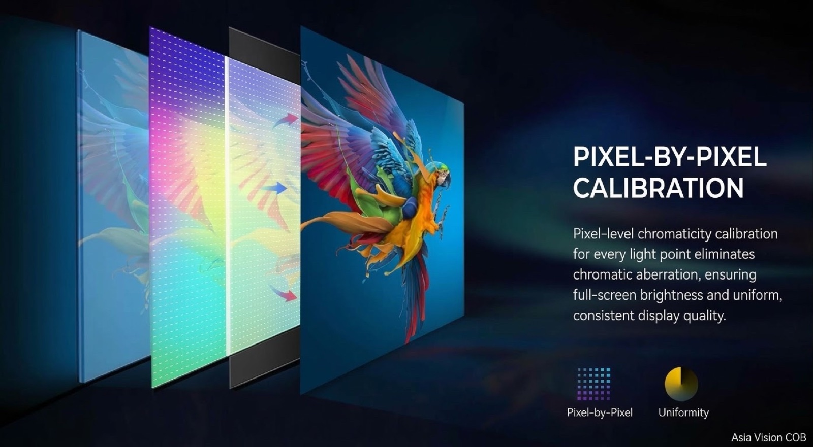
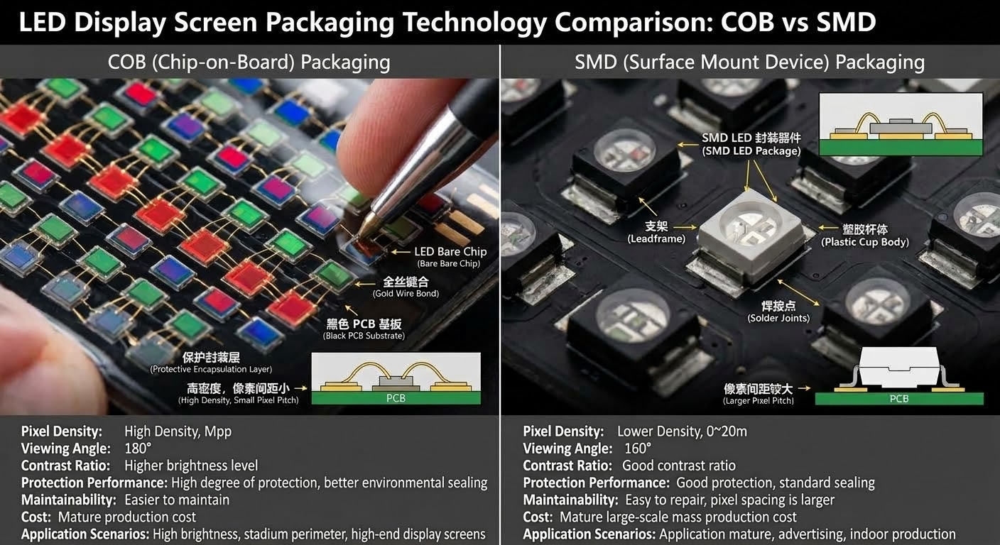
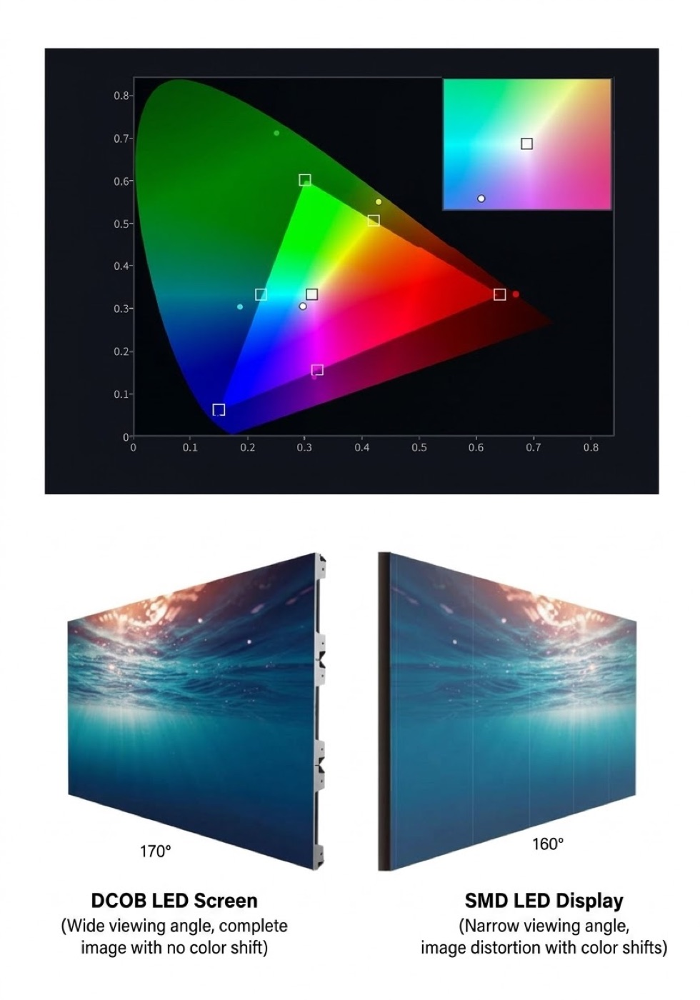
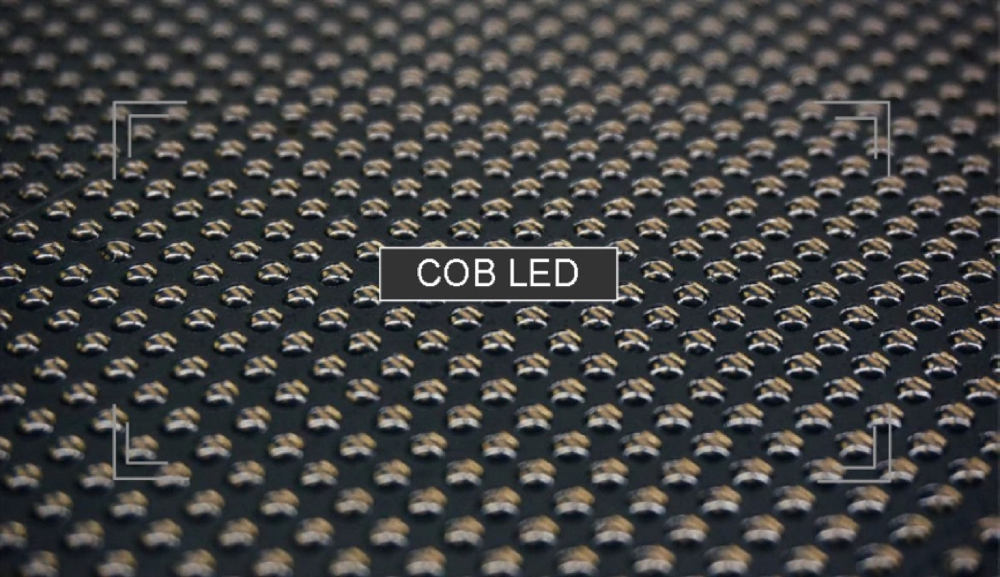
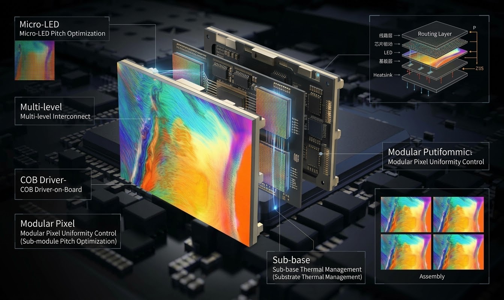

COB stands for chip-on-board. Instead of mounting individual red, green, and blue LED packages onto a printed circuit board and soldering them one by one, the COB process bonds bare LED chips directly to the board and seals the whole array under a layer of epoxy resin. The finished display surface feels smooth and solid rather than bumpy and exposed.
That single change in packaging cascades through almost every performance number a buyer cares about. Contrast rises because the resin layer absorbs stray light instead of bouncing it back at the viewer. Moisture resistance improves because there is no exposed solder joint to corrode. Impact tolerance improves because each chip is encapsulated. Colour uniformity improves because the seal flattens the optical path across the panel.
This guide explains how COB technology works at the panel level, how it compares with the older SMD approach, and what a buyer should verify before signing a purchase order. It is written for the person specifying a screen rather than the engineer building one, so the emphasis stays on the decisions that change cost and outcome.
One clarification up front: COB is a packaging and manufacturing method, not a pixel pitch and not a brightness class. You can build a fine-pitch indoor panel or a rugged outdoor panel using COB, and you can build either one using SMD. The method shapes reliability, contrast, and serviceability. It does not by itself decide the resolution of your project.
Because COB panels now appear in premium indoor ranges such as the Asia Vision CV-PRO line, buyers regularly encounter COB and SMD side by side in the same tender. Knowing exactly what separates them makes that comparison far less confusing.
An SMD panel is built from discrete lamp beads. Each bead is a small plastic package holding one LED die of a single colour, and a P1.5 panel may carry hundreds of thousands of them. They are placed by high-speed machines and fixed with reflow soldering, which means every joint is a potential failure point under thermal cycling.
A COB panel inverts that model. The dies are attached directly to the board, wire-bonded, and then covered by a single moulded resin layer. There are no lamp beads to knock loose, no reflective plastic cups to yellow, and no gaps between packages for dust to collect. The manufacturing line looks closer to semiconductor assembly than to traditional lamp assembly.

The optical consequences are measurable. On SMD, each bead has its own lens and its own reflective cup, which creates tiny bright spots and a visible grid texture when the screen is viewed off-axis. On COB, light exits through a continuous surface, so the wall reads as one sheet of colour rather than a field of dots. Off-axis colour shift falls for the same reason.
Thermal behaviour also differs. In SMD, heat travels through the package and the solder joint before reaching the board. In COB, heat moves from the die straight into the copper layer, so the junction runs cooler at the same drive current. Cooler junctions age more slowly, which is one reason COB panels hold their calibration across long duty cycles.
Neither approach is obsolete. SMD remains the workhorse for outdoor screens, rental fleets, and budget-driven indoor projects, while COB has become the default for premium indoor walls where contrast and reliability matter most. The table below puts the practical differences side by side.
| Factor | COB (chip-on-board) | SMD (lamp bead) | What It Means On Site |
|---|---|---|---|
| Surface | Sealed resin, flat and continuous | Exposed beads in plastic cups | COB resists dust and knocks |
| Contrast | About 10,000:1 on premium indoor | 3,000:1 to 5,000:1 typical | COB keeps blacks dark in lit rooms |
| Moisture | Encapsulated, easy to seal | Joint-level protection needed | COB suits humid venues |
| Repair | Module swap or chip-level rework | Single bead replacement | SMD repair is simpler in the field |
| Off-axis colour | Uniform single optical surface | Slight shift at wide angles | COB holds colour at side seats |
| Typical use | Fine-pitch indoor, control rooms | Outdoor, rental, value indoor | Match method to room and budget |

Contrast is the number that changes how a room feels. In a brightly lit lobby or a meeting room with open blinds, an SMD panel reflects ambient light off its plastic cups and solder mask, lifting the black level and washing out dark scenes. A COB panel's sealed black surface suppresses that reflection, which is why a 10,000:1 contrast ratio is realistic on COB and rare on SMD.
Uniformity is the second advantage. Because light leaves a COB panel through one continuous surface, there is no moire between a camera sensor and a bead grid. Broadcast studios and video-conference rooms care about this intensely, because a wall that looks fine to the eye can produce crawling colour bands on camera when it is built from discrete beads.
Viewing angle is the third. Across a wide indoor wall, SMD panels lose colour saturation toward the sides while COB panels hold it further out. For a boardroom with seats spread along a table, or an atrium where people approach at an angle, that difference is directly visible and often decides the specification.
These advantages cost money. COB modules carry a higher unit price because manufacturing yield is lower and the process is more capital-intensive. The question a buyer should ask is not whether COB is better, but whether the room will show the difference. In a dark control room where the screen is always seen head-on, the premium is harder to justify. In a glass-walled lobby it is usually obvious.
Pixel pitch interacts with all of this. Fine pitches such as P0.9 to P1.5 are where COB gains in uniformity and contrast are most visible, because the viewer sits close enough to notice the surface quality of the panel. At coarse pitches viewed from far away, the packaging advantage is still real but far less dramatic.
| Pitch Band | Typical Room | COB Benefit Level | Notes |
|---|---|---|---|
| P0.9 - P1.2 | Executive briefing room | High | Close viewing exposes surface quality |
| P1.2 - P1.5 | Boardroom, control room | High | Camera friendly, no bead moire |
| P1.5 - P1.8 | Lobby, showroom | Medium to high | Contrast wins under ambient light |
| P1.8 - P2.5 | Auditorium, retail | Medium | Compare SMD cost before committing |
| P2.5 and coarser | Large venue, signage | Low | SMD usually delivers better value |

Reliability is where COB quietly pays back. A sealed surface tolerates humidity, dust, and the occasional impact far better than exposed beads. In venues with kitchens, pools, or heavy foot traffic, that translates into fewer failed pixels and fewer service visits across the warranty period.
Service is the counter-argument. When an SMD lamp bead fails, a technician can replace that single bead with a hot-air station in minutes. When a COB panel develops a fault, the usual path is to swap the module, because chip-level rework needs specialised equipment. Buyers should therefore insist on fast module availability and a front-serviceable cabinet design so a swap does not require dismantling the wall.
The life-span claim is the same on paper for both types, roughly 100,000 hours to half brightness, but real-world ageing differs. COB runs cooler at the junction, and cooler junctions drift less in colour over time, so a COB wall often needs recalibration less often than an SMD wall of the same age.
Total cost of ownership should be modelled over five years rather than compared at the invoice. Add the projected service visits, the spare modules you will hold in stock, and the labour to recalibrate. For a premium indoor installation running long hours, COB frequently closes the price gap. For a short-duty signage screen, it usually does not.
COB is not a tweak to an SMD line. It replaces the parts of the process that made SMD cheap, so understanding the new bottlenecks tells you what to question in a supplier. Four stages carry most of the difference, and each one turns into a question a buyer can ask.
For a buyer the practical consequence is that COB quality lives in process control, and process control is invisible in a finished panel. Ask how faults are caught before coating, and ask to see an ageing record. Asia Vision manufactures SMD, GOB, and COB on its own production lines, runs 8 IC production lines and 7 LED SMT production lines, and applies ageing tests and QC before export delivery, so those answers come from the factory rather than a trading desk.
COB is not one pitch, and it is not automatically the right answer at every pitch. It becomes the practical route at fine pitch, where discrete beads crowd the board and the gap between them shrinks toward the point where assembly and reliability both suffer. Direct-die attach scales into that density more gracefully, which is why COB dominates the fine-pitch indoor market and why sub-1mm walls are built on it.
At the coarse end COB still works, but the advantage thins. A P2.5 or coarser wall seen from across a large venue is not close enough for the viewer to notice the packaging, so the premium buys reliability rather than visible quality. Pitch also sets how close people can sit: the rule of thumb most integrators use is that the minimum comfortable distance in metres is roughly the pitch in millimetres, and a good design seats the audience further back than that. A wall specified below its pitch's distance shows its pixel structure no matter how good the packaging is.
| Pitch Zone | What COB Contributes | Where It Fits | What To Check |
|---|---|---|---|
| Sub-1mm (below P1.0) | The practical enabler - bead assembly is at its limit, direct-die attach is not | Executive rooms, close-view installations | Yield discipline and module matching |
| P1.0 - P1.5 | Full COB advantage: contrast, uniformity, camera-friendly surface | Boardrooms, control rooms, broadcast-facing work | Front-service cabinet and spares |
| P1.5 - P2.5 | Contrast and moisture resistance still visible indoors | Lobbies, showrooms, auditoria | Cost against SMD at the same pitch |
| P2.5 and coarser | Reliability, but little visual gain at distance | Large venues, signage | Whether SMD delivers better value |
Asia Vision's COB range at P0.93 is in mass production, and the limits of pushing below one millimetre are covered in P0.9 LED display realities.
The fastest way to pick a packaging method is to start from the project rather than the technology. The table below is a starting point; the full comparison lives in COB vs SMD vs GOB encapsulation, the procurement logic in the COB vs SMD buying guide, and where GOB is the right middle ground in the GOB encapsulation guide.
| Project Type | First Choice | Why | Watch For |
|---|---|---|---|
| Boardroom, control room, broadcast-facing | COB | Camera-friendly surface, no bead moire, high contrast | Front-service design for module swaps |
| Bright lobby or showroom | COB or GOB | Sealed surface resists ambient reflection and contact | Confirm contrast under the room's actual light |
| Humid or high-traffic indoor venue | GOB or COB | Resin protection tolerates moisture and handling | Coating quality, not just coating presence |
| Outdoor fixed advertising | SMD or GOB | Cost and serviceability dominate at coarse pitch | IP rating and brightness headroom |
| Rental and staging | SMD or GOB | Robust, inexpensive bead replacement in the field | Weight and rigging hardware |
| Sub-1mm fine pitch | COB | The packaging that scales to the density | Module uniformity and matching |
| Value-driven indoor at P2.5 and above | SMD | Lowest cost where packaging is invisible | Nothing lost at that viewing distance |
Two names come up whenever fine-pitch buyers talk about the future, and they mean different things. MIP, or micro-in-package, is an alternative packaging route that sits alongside COB and SMD; the trade-offs are set out in MIP vs COB vs SMD packaging. Micro-LED is a different emitter technology rather than a packaging choice, and the practical gap between it and mature COB today is covered in Micro-LED vs COB.
For a project you are buying this year, COB is the mature, mass-produced option across the fine-pitch band, while MIP and Micro-LED are the ones to watch rather than to specify blind. The wider direction of travel is summarised in LED industry trends 2026.
COB carries a higher unit cost than SMD at the same pitch, and it is worth knowing which inputs cause that rather than treating the premium as one number. Six drivers do most of the work, and most of them are levers a buyer can pull.
| Cost Driver | Why It Moves Cost | Lever For The Buyer |
|---|---|---|
| Chip grade and binning | Tighter brightness and colour bins give a cleaner wall but cost more to select | Match binning to the room; a fixed-content wall tolerates wider bins |
| Pixel pitch | Finer pitch means more chips per square metre and denser bonding | Do not buy a pitch finer than the viewing distance needs |
| Board and driver design | Layer count, copper, and driver IC choice set the electronics cost | Ask how the drivers behave under long duty cycles |
| Coating and encapsulation | Material grade and coating consistency drive both cost and optical quality | Require a sample that shows the actual coat finish |
| Testing and ageing | Inline test and burn-in add cycle time but remove early failures | Insist on the test gate even when it is not free |
| Volume and cabinet build | Tooling amortises across quantity; cabinet engineering is custom work | Consolidate sizes and standardise cabinets across projects |
The main service difference between COB and SMD is the unit of repair. On SMD, a technician can replace a single failed bead in the field. On COB, the standard field repair is a module swap, because chip-level work needs a workshop and specialised tooling. That is not a weakness if the design anticipates it, but it changes what you buy up front.
Asia Vision offers cabinet customisation, ageing tests, and QC, and lists spare-part information through its product range overview. If longevity matters, model the spare pool and the recalibration interval into the five-year cost, not just the invoice.
Because COB quality is invisible in a finished panel, comparing suppliers means comparing evidence rather than brochures. Three questions sort most quotes quickly: who owns the line, how faults are caught, and what happens after delivery.
The through-line is that COB is a manufacturing and packaging decision with real consequences on the line, at the wall, and in service. Decide it from the room, the viewing distance, and the service plan rather than from the label alone. For the procurement version of that decision, see the COB vs SMD buying guide; for the product side, the CV-PRO COB series and the RH-PRO COB range.
Asia Vision Technology manufactures both COB and SMD displays, so our recommendation is based on your room rather than on the production line we happen to stock. The CV-PRO COB series delivers roughly 10,000:1 contrast with a sealed surface suited to lobbies, control rooms, and camera-facing installations.
Every panel ships with CE, FCC, and RoHS certification, a 3-year standard warranty, and a 15 to 20 working day production lead time. Our engineers review your room dimensions, seating layout, and content plan before quoting a pitch, so the specification matches the viewing distance instead of a catalogue page.

For this requirement our range covers it directly: the X Series (front/rear service, common parts across platforms) and the series overview for spare-part lists.
Related reading: 📖 LED Display Application Guides 2026
Related reading: LED Display Color Calibration Guide 2026